Відеоспостереження, як частина рішення загальної системи безпеки на залізничних переїздах
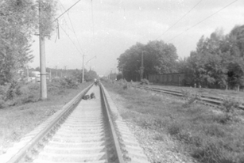
1. Чому саме системи спостереження?
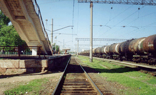ЩО це?
- Контроль правил проїзду ЖД переїздів.
- Уникнення безконтрольного порушення правил.
- Контроль ходу справ та запобігання трагедій
- Допомога в виявленні порушників та надання інформації в ході розслідування трагедій (випадків) на переїздах
ЯК працює?
- 365/7/24 постійне відео спостереження
- Датчик руху поїздів (розкриття шлагбаумів) для допомоги оператору
- Автоматизація системи відеозапису
- Функції такі як:
- Оперативне доведення до машиніста інформації по ситуації на переїздах
- Фіксація порушників
Візуальне спостереження та інтелект
Інтелектуальні аплікації:
- Фіксування номерів автомобілів порушників правил переїзду
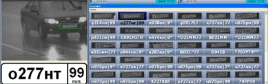 - Розпізнавання номерів вагонів
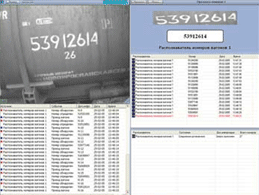 - Перевірка правильності формування , облікування рухомого складу
- Фіксування “лівих” вагонів і потягів
- Відслідкування проходження небезпечних грузів по мережі залізної дороги
- Диспетчерський супровід вагонів
- Автоматичний запис і сповіщення операторів при спрацюванні системи переїздів (сигнал від закриття переїзду)
Відеоспостереження як частина рішення загальної системи безпеки банків
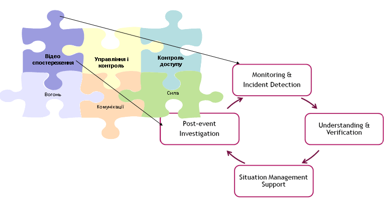2. Загальна архітектура ВСС
Загальні системи відеоспостереження
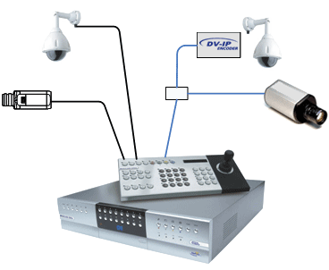 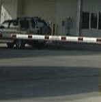 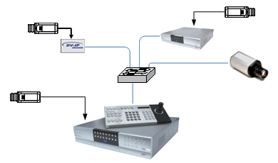Приклад побудови системи відеоспостереження
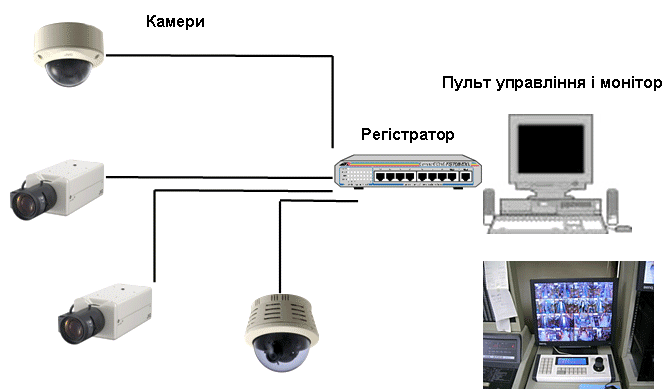3. Мережеве рішення
Приклади мережевого рішення побудови загальної системи відеоспостереження
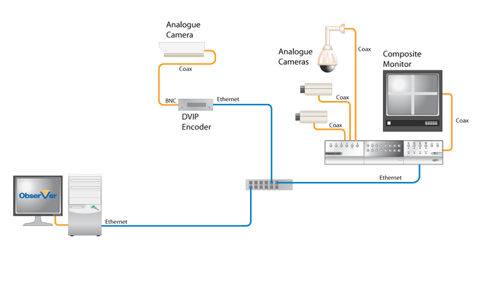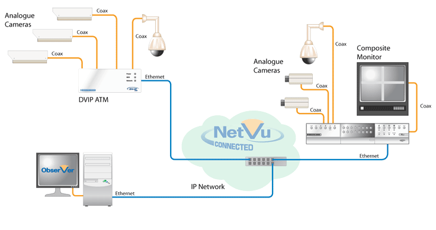
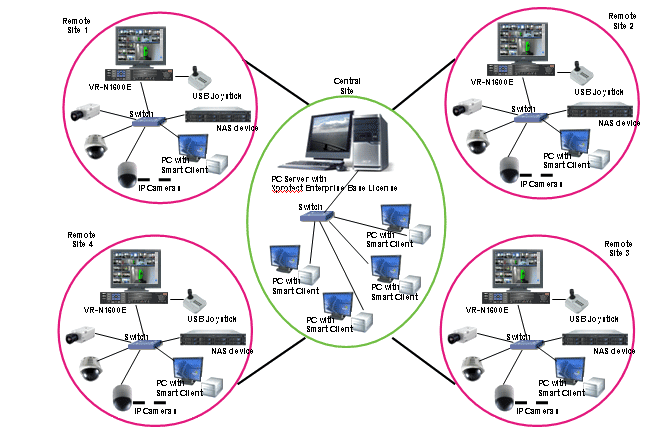
4. Референція
Пропозиції щодо застосування системи моніторингу та відеоспостереження на залізничних переїздах
- Автоматизація управління регулюванням шлагбаума
- Автоматичний запис ситуацій на переїздах
- Оперативне виведення на екран оператора ситуації на переїзді при проходженні залізничного транспорту
- Оперативне сповіщення машиніста про ситуацію на переїздах
- Впровадження в дію відео інтелекту у відповідності до заданих аплікацій